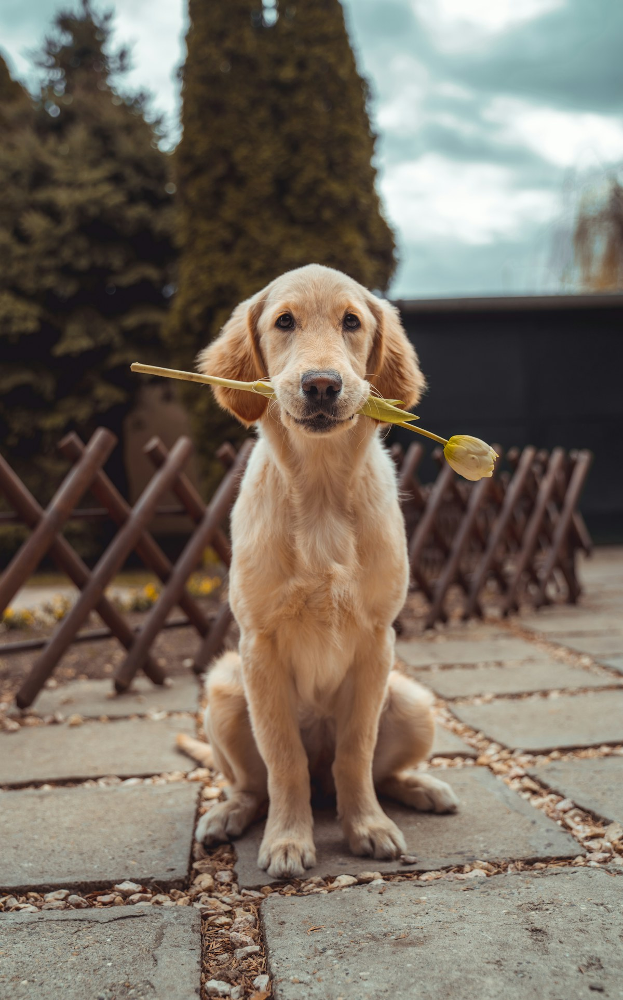
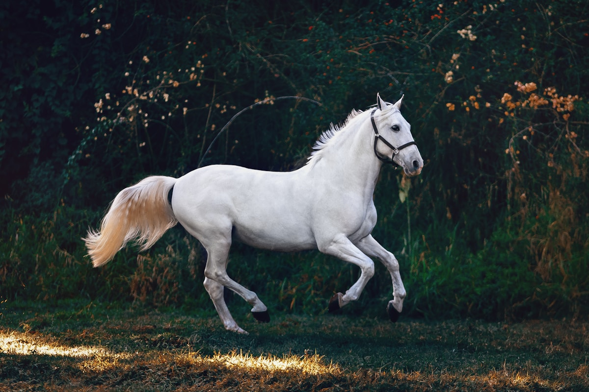
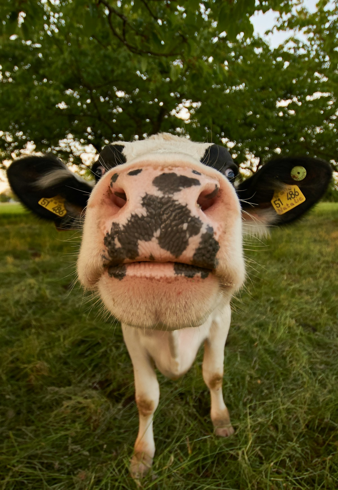
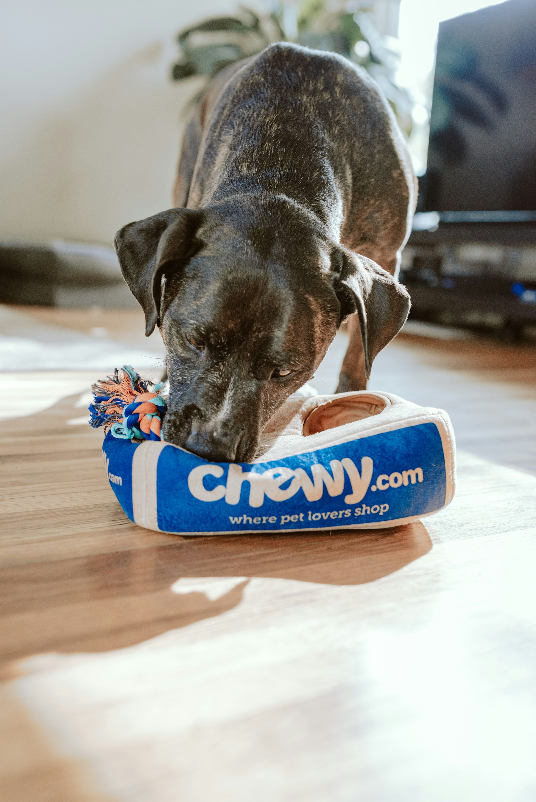

01
Nevele
Kleine huisdieren
Preventieve zorg, consultaties, diagnostiek en behandeling voor uw huisdier.
Dierenartsenpraktijk in Nevele & Lotenhulle
Persoonlijke, deskundige diergeneeskunde voor elk dier — van trouwe huisgenoot tot krachtige viervoeter en landbouwdier.
Welkom bij Animedi
Animedi is een groepspraktijk waar ervaring, specialisatie en oprechte betrokkenheid samenkomen.
Elke dierenarts verdiept zich in de zorg voor een specifieke diersoort. Zo krijgt u steeds de juiste expertise, binnen een vertrouwde praktijk die uw dier kent.
Lees meer over onze aanpak →Onze afdelingen
Kies een afdeling voor contactgegevens, bereikbaarheid en afspraken.

Nevele
Preventieve zorg, consultaties, diagnostiek en behandeling voor uw huisdier.

Nevele
Gespecialiseerde, mobiele en klinische zorg voor recreatie- en sportpaarden.

Lotenhulle
Praktische diergeneeskunde en bedrijfsbegeleiding met een eigen wachtdienst.

Goede zorg begint met luisteren — naar mens én dier.
Persoonlijk en met passie
We combineren jarenlange ervaring met continue bijscholing. Zo kunnen we snel schakelen, helder adviseren en voor ieder dier een passend zorgtraject uitwerken.
De juiste expertise voor elke diersoort, op één vertrouwd adres.
We nemen tijd voor uw vragen en leggen elke stap begrijpelijk uit.
Met een eigen wachtdienst per afdeling staan we voor u klaar.
We helpen u graag verder
Kies de juiste afdeling. Zo komt u meteen bij het team dat u het beste kan helpen.
Contact
Voor dringende gevallen zijn de afdelingen rechtstreeks bereikbaar.
Nevele
Lotenhulle
Consultaties kleine huisdieren
Bel op werkdagen tussen 09:00 en 19:00 voor een afspraak.